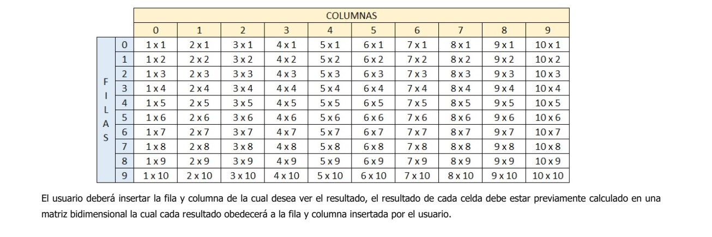

TALLER DE FUNCIONES Ejercicio del 1 al 5 de ARREGLOS 1. Crear un vector de tipo Entero con 5 posiciones, llenarlo con información solicitada al usuario. Después de recoger toda la información, se requiere imprimir el índice de cada posición en el arreglo con su valor de la siguiente manera. SubProceso mostrar(datos) Definir i Como Entero; Limpiar Pantalla; //código para mostrar los números ingresados Escribir "Los números que fueron ingresados son"; Escribir""; Para i <- 0 hasta 4 con paso 1 Hacer Escribir "Número (", [i + 1], ") ", datos[i]; FinPara FinSubProceso Proceso vectorp1 Definir ingresar, num Como Entero; Dimension ingresar[5]; //ingreso de numeros de manera manual Escribir "Ingrese 1er número"; Leer num; ingresar[0]<-num; Escribir "Ingrese 2er número"; Leer num; ingresar[1]<-num; Escribir "Ingrese 1er número"; Leer num; ingresar[2]<-num; Escribir "Ingrese 2er número"; Leer num; ingresar[3]<-num; Escribir "Ingrese 2er número"; Leer num; ingresar[4]<-num; mostrar(ingresar); FinProceso 2. Crear un arreglo de números enteros de 20 posiciones, el cual, debe ser llenado con números aleatorios entre 1 y 100; después de haber llenado dicho arreglo, se debe volver a recorrer utilizando un ciclo diferente al que se usó para llenarse e imprimir los números pares e impares. //SubProceso de numeros al Azar SubProceso num_azar( datos_azar) Definir i Como Entero; Escribir "El vector de 20 item al Azar es:"; //fin de numeros al azar //código de números pares sacados del vector al azar para i <- 1 hasta 20 con paso 1 Hacer Escribir datos_azar[i], sin Saltar " "; FinPara Escribir " "; Escribir "___________________________________________________________"; Escribir " "; FinSubProceso //Fin de SubProceso de numeros al Azar //SubProceso de numeros al Pares del vector SubProceso num_par( datos_par, pari1, pari ) Definir i Como Entero; Escribir "Numeros Pares sacados del vector al Azar es:"; Mientras pari1 < pari Hacer para pari <- 1 hasta pari1 - 1 con paso 1 Hacer Escribir datos_par[pari] , sin Saltar" "; FinPara FinMientras Escribir " "; Escribir "___________________________________________________________"; Escribir " "; FinSubProceso //Fin SubProceso de numeros al Pares del vector //SubProceso de numeros al Impares del vector SubProceso num_impar (datos_impar, impari2, impari ) //código de números impares sacados del vector al azar Escribir "Numeros Impares sacados del vector al Azar es:"; Mientras impari2 < i Hacer para impari <- 1 hasta impari2 - 1 con paso 1 Hacer Escribir datos_impar[impari] , sin Saltar" "; FinPara FinMientras Escribir " "; Escribir "___________________________________________________________"; Escribir " "; //Fin de codigo impar FinSubProceso //Fin SubProceso de numeros al Impares del vector //Fin Proceso de Calculo del Vector Proceso vectores_pares_impares Definir vector,par,impar,i,i1,i2 Como Entero; i1 <- 0; i2 <- 0; Dimension vector[22]; Dimension par[22]; Dimension impar[22]; //codigo para vector insertando numeros al azar para i <- 1 hasta 20 con paso 1 Hacer vector[i] <- azar(100); FinPara //codigo tomado del vector insertando numeros al azar para par e impar para i <- 1 hasta 20 con paso 1 Hacer Si (vector[i]%2 = 0) Entonces par[i1] <- vector[i]; i1 <- i1 + 1; SiNo impar[i2] <- vector[i]; i2 <- i2 + 1; FinSi FinPara Escribir "___________________________________________________________"; //factores de numeros azar, par e impar num_azar(vector); num_par(par, i1, i); num_par(impar, i2, i); FinProceso //Fin del Proceso principal de Calculo del Vector 3. Imprimir los números primos del 1 al 1000, el resultado debe ser buscado de forma matemática. SubProceso num_primos () Definir x, num, contador Como Entero; para num <- 1 hasta 1000 Hacer x <- 1; contador <- 0; Mientras x <= num Hacer Si num mod x = 0 Entonces contador <- contador + 1; FinSi x <- x + 1; FinMientras //muestra todos los numero primos del 1 al 1000 Si contador = 2 Entonces Escribir num Sin Saltar, " "; FinSi FinPara Escribir ""; FinSubProceso Proceso Numeros_primos //Codigo de nnúmeros primos EScribir "Números Primos del 1 al 1000"; num_primos(); FinProceso 4. Dada la siguiente matriz bidimensional, el cual debe de quemar en el código. //SubProceso de codigo de numeros del 16 al 20 SubProceso parte4( datos) //codigo del 16 al 20 Definir i, j, cont4 Como Entero; Definir result4 Como Caracter; cont4 <- 21; Para i<- 3 Hasta 3 Con Paso 1 Hacer Para j <- 1 Hasta 5 Con Paso 1 Hacer cont4 <- cont4 - 1; result4 <- Concatenar("",ConvertirATexto(cont4)); datos[i,j] <- result4; FinPara FinPara //fin codigo del 16 al 20 FinSubProceso //SubProceso de codigo de numeros del 16 al 20 //SubProceso de codigo de numeros del 11 al 15 SubProceso parte3(datos) //codigo del 11 al 15 Definir i, j, cont3 Como Entero; Definir result3 Como Caracter; cont3 <- 10; Para i <- 2 Hasta 2 Con Paso 1 Hacer Para j <- 1 Hasta 5 Con Paso 1 Hacer cont3 <- cont3 + 1; result3 <- Concatenar("",ConvertirATexto(cont3)); datos[i,j] <- result3; FinPara FinPara //fin codigo del 11 al 15 FinSubProceso //SubProceso de codigo de numeros del 11 al 15 //SubProceso de codigo de numeros del 6 al 10 SubProceso parte2(datos) //codigo del 6 al 10 Definir i, j, cont2 Como Entero; Definir result2 Como Caracter; cont2 <- 11; Para i <- 1 Hasta 1 Con Paso 1 Hacer Para j <- 1 Hasta 5 Con Paso 1 Hacer cont2 <- cont2 - 1; si cont2 = 10 Entonces result2 <- Concatenar("",ConvertirATexto(cont2)); datos[i,j] <- result2; Sino result2 <- Concatenar("0",ConvertirATexto(cont2)); datos[i,j] <- result2; FinSi FinPara FinPara //fin codigo del 6 al 10 FinSubProceso //Fin SubProceso de codigo de numeros del 6 al 10 //SubProceso de codigo de numeros del 1 al 5 SubProceso parte1(datos) //codigo del 1 al 5 Definir i, j, cont Como Entero; Definir result Como Caracter; cont <- 0; Para i <- 0 Hasta 0 Con Paso 1 Hacer Para j <- 1 Hasta 5 Con Paso 1 Hacer cont <- cont + 1; result <- Concatenar("0",ConvertirATexto(cont)); datos[i,j] <- result; FinPara FinPara //fin codigo del 1 al 5 FinSubProceso //Fin SubProceso de codigo de numeros del 1 al 5 //subproceso para mostrar datos SubProceso imprimir(mostrar) definir i,j Como Entero; Para i <- 0 Hasta 3 Con Paso 1 Hacer Para j <- 1 Hasta 5 Con Paso 1 Hacer Escribir mostrar[i,j] , Sin Saltar " "; FinPara Escribir " "; FinPara //fin imprimir en pantalla Escribir " "; FinSubProceso //subproceso para mostrar datos //proceso principal Proceso MatrizBidimensional Definir matriz Como caracter; Dimension matriz[5,6]; Escribir " "; Escribir "Matriz Bidimensional"; Escribir " "; parte1(matriz); parte2(matriz); parte3(matriz); parte4(matriz); imprimir(matriz); FinProceso //fin de proceso principal 5. Se debe de imprimir el siguiente cuadro  SubProceso tabla() //codigo de la tabla del 1 al 9 Escribir " Programa de resultado de tabla de multiplicar del 1 al 10"; Escribir " "; Escribir "--------------------------------------------------------------------"; Escribir " C O L U M N A "; Escribir "---------------------------------------------------------------------"; Escribir" | | 0 | 1 | 2 | 3 | 4 | 5 | 6 | 7 | 8 | 9 |"; Escribir "---------------------------------------------------------------------"; Escribir " | 0 | 1X1 | 2X1 | 3X1 | 4X1 | 5X1 | 6X1 | 7X1 | 8X1 | 9X1 | 10X1 |"; Escribir "---------------------------------------------------------------------"; Escribir " | 1 | 1X2 | 2X2 | 3X2 | 4X2 | 5X2 | 6X2 | 7X2 | 8X2 | 9X2 | 10X2 |"; Escribir "---------------------------------------------------------------------"; Escribir "F| 2 | 1X3 | 2X3 | 3X3 | 4X3 | 5X3 | 6X3 | 7X3 | 8X3 | 9X3 | 10X3 |"; Escribir "--------------------------------------------------------------------"; Escribir "I| 3 | 1X4 | 2X4 | 3X4 | 4X4 | 5X4 | 6X4 | 7X4 | 8X4 | 9X4 | 10X4 |"; Escribir "---------------------------------------------------------------------"; Escribir "L| 4 | 1X5 | 2X5 | 3X5 | 4X5 | 5X5 | 6X5 | 7X5 | 8X5 | 9X5 | 10X5 |"; Escribir "---------------------------------------------------------------------"; Escribir "A| 5 | 1X6 | 2X6 | 3X6 | 4X6 | 5X6 | 6X6 | 7X6 | 8X6 | 9X6 | 10X6 |"; Escribir "---------------------------------------------------------------------"; Escribir "S| 6 | 1X7 | 2X7 | 3X7 | 4X7 | 5X7 | 6X7 | 7X7 | 8X7 | 9X7 | 10X7 |"; Escribir "---------------------------------------------------------------------"; Escribir " | 7 | 1X8 | 2X8 | 3X8 | 4X8 | 5X8 | 6X8 | 7X8 | 8X8 | 9X8 | 10X8 |"; Escribir "--------------------------------------------------------------------"; Escribir " | 8 | 1X9 | 2X9 | 3X9 | 4X9 | 5X9 | 6X9 | 7X9 | 8X9 | 9X9 | 10X9 |"; Escribir "--------------------------------------------------------------------"; Escribir " | 9 | 1X10| 2X10 |3X10| 4X10| 5X10| 6X10| 7X10| 8X10| 9X10| 10X10 |"; Escribir "--------------------------------------------------------------------"; Escribir " "; //fin de codigo para alinear tabla del 10 FinSubProceso SubProceso imprimir( mostrar) Definir fila, columna, resultado Como Entero; //mostrar Resultados Escribir "Ingrese la coordenada de resultado según el cuadro"; Escribir "Ingrese la Fila"; Leer fila; Escribir "Ingrese la Culumna"; Leer columna; resultado <- mostrar[fila,columna] ; Escribir "Resultado de la multiplicación De: Fila # ", fila, " y la columna # ", columna ," la Multiplicación es: ", resultado; FinSubProceso //fin de resultados //tabla del 1 SubProceso tabladel1(tabla1) Definir i, n, p ,j, res1 Como Entero; i <- 0; p <- -1; Para i <- 1 Hasta 10 Con Paso 1 Hacer Para j <- 0 Hasta 0 Con Paso 1 Hacer p <- p + 1; res1 <- 1 * i; tabla1[p,0] <- res1; FinPara FinPara FinSubProceso //fin tabla del 1 //tabla del 2 SubProceso tabladel2(tabla2) Definir i, n, p ,j, res2 Como Entero; i <- 0; p <- -1; Para i <- 1 Hasta 10 Con Paso 1 Hacer Para j <- 0 Hasta 0 Con Paso 1 Hacer p <- p + 1; res2 <- 2 * i; tabla2[p,1] <- res2; FinPara FinPara FinSubProceso //fin tabla del 2 //tabla del 3 SubProceso tabladel3( tabla3 ) Definir i, n, p ,j, res3 Como Entero; i <- 0; p <- -1; Para i <- 1 Hasta 10 Con Paso 1 Hacer Para j <- 0 Hasta 0 Con Paso 1 Hacer p <- p + 1; res3 <- 3 * i; tabla3[p,2] <- res3; FinPara FinPara FinSubProceso //fin tabla del 3 //tabla del 4 SubProceso tabladel4(tabla4) Definir i, n, p ,j, res4 Como Entero; i <- 0; p <- -1; Para i <- 1 Hasta 10 Con Paso 1 Hacer Para j <- 0 Hasta 0 Con Paso 1 Hacer p <- p + 1; res4 <- 4 * i; tabla4[p,3] <- res4; FinPara FinPara FinSubProceso //fin tabla del 4 //tabla del 5 SubProceso tabladel5(tabla5) Definir i, n, p ,j, res5 Como Entero; i <- 0; p <- -1; Para i <- 1 Hasta 10 Con Paso 1 Hacer Para j <- 0 Hasta 0 Con Paso 1 Hacer p <- p + 1; res5 <- 5 * i; tabla5[p,4] <- res5; FinPara FinPara FinSubProceso //fin tabladel 5 //tabla del 6 SubProceso tabladel6(tabla6) Definir i, n, p ,j, res6 Como Entero; i <- 0; p <- -1; Para i <- 1 Hasta 10 Con Paso 1 Hacer Para j <- 0 Hasta 0 Con Paso 1 Hacer p <- p + 1; res6 <- 6 * i; tabla6[p,5] <- res6; FinPara FinPara FinSubProceso //fin tabla del 6 //tabla del 7 SubProceso tabladel7(tabla7) Definir i, n, p ,j, res7 Como Entero; i <- 0; p <- -1; Para i <- 1 Hasta 10 Con Paso 1 Hacer Para j <- 0 Hasta 0 Con Paso 1 Hacer p <- p + 1; res7 <- 7 * i; tabla7[p,6] <- res7; FinPara FinPara FinSubProceso //fin tabla del 7 //tabla del 8 SubProceso tabladel8(tabla8) Definir i, n, p ,j, res8 Como Entero; i <- 0; p <- -1; Para i <- 1 Hasta 10 Con Paso 1 Hacer Para j <- 0 Hasta 0 Con Paso 1 Hacer p <- p + 1; res8 <- 8 * i; tabla8[p,7] <- res8; FinPara FinPara FinSubProceso //fin tabla del 8 //tabla del 9 SubProceso tabladel9(tabla9) Definir i, n, p ,j, res9 Como Entero; i <- 0; p <- -1; Para i <- 1 Hasta 10 Con Paso 1 Hacer Para j <- 0 Hasta 0 Con Paso 1 Hacer p <- p + 1; res9 <- 9 * i; tabla9[p,8] <- res9; FinPara FinPara FinSubProceso //fin tabla del 9 //tabla del 10 SubProceso tabladel10(tabla10) Definir i, n, p ,j, res10 Como Entero; i <- 0; p <- -1; Para i <- 1 Hasta 10 Con Paso 1 Hacer Para j <- 0 Hasta 0 Con Paso 1 Hacer p <- p + 1; res10<- 10 * i; tabla10[p,9] <- res10; FinPara FinPara FinSubProceso //fin tabla del 10 Proceso CuadroMultiplicar Definir num Como Entero; Definir i, n, p ,j Como Entero; Definir res1, res2, res3, res4, res5, res6, res7, res8, res9, res10 Como Entero; Definir matriz Como Entero; Dimension matriz[11,12]; Escribir " ";Escribir " "; tabla(); tabladel1(matriz); tabladel2(matriz); tabladel3(matriz); tabladel4(matriz); tabladel5(matriz); tabladel6(matriz); tabladel7(matriz); tabladel8(matriz); tabladel9(matriz); tabladel10(matriz); imprimir(matriz); FinProceso Volver a Principal